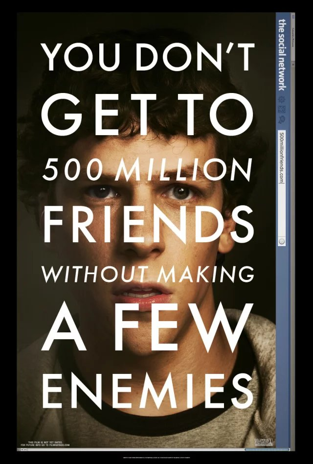
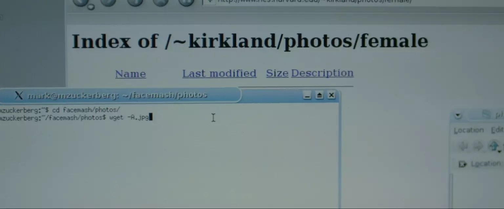
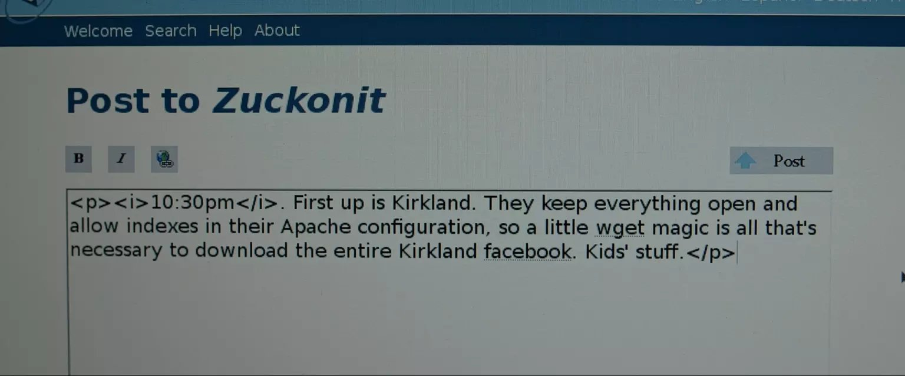
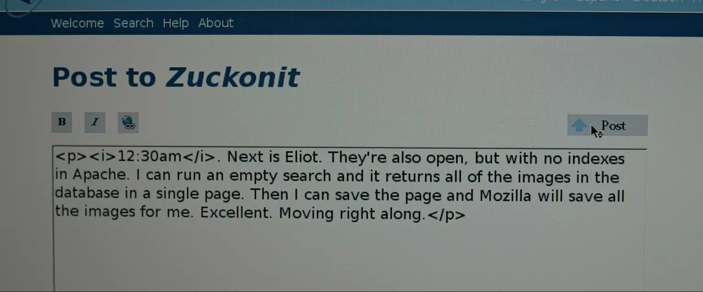
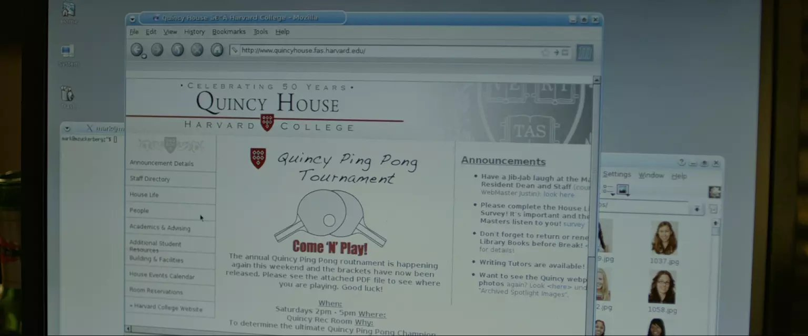
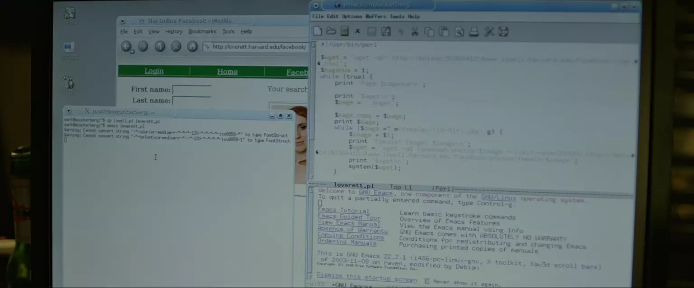

最近喜欢看艾森伯格的电影，于是刷列表之余还是想重温下经典《社交网络》。

不过不想做影评或者大发感慨，只是仔细看了一下电影开始 10 分钟左右扎克”hack”的方法。电脑还在等待编译“开源大法”，就写篇日志吧。
也许是电影为了让大众容易看懂，也许是因为故事背景在十多年前，互联网今非昔比，所以方法并没有多么极客、高端，也就没什么必要写到技术博客了，放在qq空间里纯当娱乐。
首先有个背景，估计节省了扎克很多麻烦，看起来系统是分楼栋来的，那么男女的分开的，不然的话那年代从照片分男女估计就难倒二年级的小扎克了。


First up is Kirkland. They keep everything open and allow indexes in their Apache configuration. So a little Wget magic is all that’s necessary to download the entire Kirkland facebook. Kids’ stuff.
apache允许目录访问，而且照片连号，也就是说照片可以直接下载。wget很方便的命令行下载，通配符jpg就可以了。

Next is Eliot. They’re also open, but with no indexes on Apache. I can run an empty search and it returns all of the images in the database in a single page. And I can save the page and Mozilla will save all the images for me. Excellent. Moving right along.
跑一个空搜索就能搜到所有人了，说明这个楼的系统是模糊匹配的，如果是数据库的话，说不定还可以注入。网页上做空白搜索显示所有照片，浏览器有缓存自然保存了照片，当然批量下载也可以。
Lowell has some security. They require a user name/password combo, and I’m gonna go ahead and say they don’t have access to the main FAS user database, so they have no way of detecting an intrusion.
这个楼需要用户名密码。这里光看台词还理解不了，需要结合电影中扎克的博客。博客讲到，分开的系统没有权限连接学校总用户系统，所以这个分系统没法拥有每个学生的密码，即需要给学生分发密码。而统一公布并不靠谱，一一分发相当困难，那就尝试每个人都有的信息，于是扎克尝试了学生名字+学号，首先他试了自己的，不知道是取消了还是没通过，后面又试了一个bolson，至于怎么得到的就没说了，姓名学号这个东西也不难得到。
接着是他博客的内容，图片是分开的网页上的，那就需要脚本上场了，他用的perl（记得上次刷的时候中文字幕是Python，看来字幕组也有有立场的程序猿）。
仅仅是下载有规律地址的图片的话，这类脚本一般比较简单，几行代码的事。
台词提到因为系统没有FAS user database的权限，所以他们无法察觉到入侵，这个因果关系不是太明了。 也许是扎克解释了下刚刚用自己名字登录了一下的问题吧，比如系统有登录日志，发现非本楼人员之类的。（锁IP地址不是一下就找到你了么。。那年头校园里都是独立IP）
Adams has no security but limits the number of results to 20 a page. All I have to is break up the same script I used on Lowell and it’s set.
每页20个结果，修改一下Lowell楼用的perl脚本。

Quincy has no online Facebook, what a sham. Nothing I can do about that.
人家不放照片到网站上，小扎也没办法了。
Dunster is intense. Not only is there no public directory but there’s no directory at all. You have to do searches and every search returns more than 20 matches nothing is returned. Once you do get results they don’t link directly to the images, they link to a PHP that redirects or something. Weird. This maybe difficult, I’ll come back later.
没有列出的条目，搜索结果超过20还会隐藏，查到的结果，点过去不是图片也不是直连个人网页，而是一个重定向跳转，跳转目的地还各不相同。 这个编程筛选复杂许多，小扎暂时放弃。估计真要搞的话，当晚他是搞不完了。

Leverett is a little better. I’ts still make you search but you can do an empty search and gets links to pages with every student’s picture. It’s slightly obnoxious that they let you view one picture at a time. And there’s no way I’m going to go 500 hundred pages to download pics one at a time. So its definitely necessary to break out Emacs and modify that Perl script.
又是用空搜索，得到链接去个人主页，页面上有照片。看来这些照片的地址是没规律的。这里中文字幕组给“break out Emacs and modify that Perl script”翻译成关掉Emacs来修改perl脚本，上次看的时候就楞了一下，不知道是不是反过来翻译成“祭出神器”Emacs来修改perl脚本更合适。。。不过我是不参与Emacs和Vim之战的，我是IDE党。
搜索->进网页->获取图片，标准的爬虫脚本了，主要是根据html内容写正则匹配，获取元素，代码量也不会太多。
Done.
电影中小扎这晚的抓图工作就这么多了。
侧面再次显示了美国高中生活的丰富多彩，国内高中能接触编程的也只有OI竞赛的神牛们了，然而能上个满意学校的基本都是金字塔尖的。写个小爬虫脚本多少需要对html、 php、一个脚本语言、apache这些有一定的了解，十多年前的小扎做这些就是玩儿的，十多年后工具发达数倍的时代，我们光靠大一一年玩到这个程度的那真是对编程够钟爱。